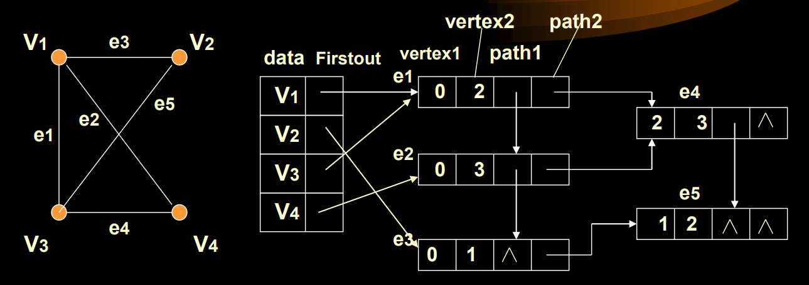
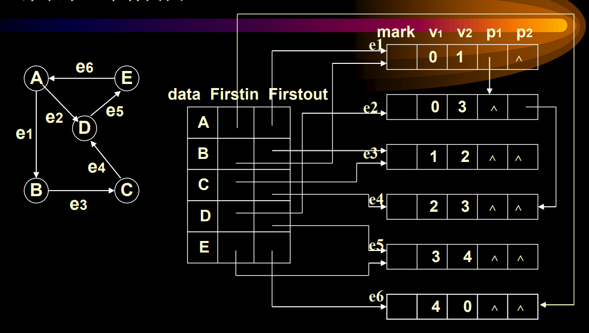
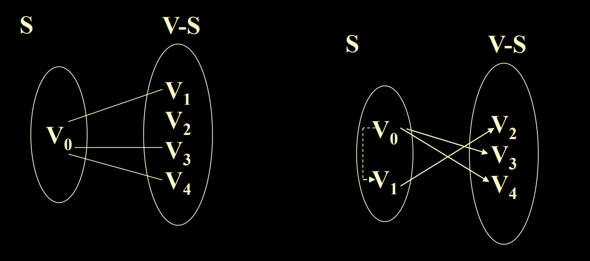
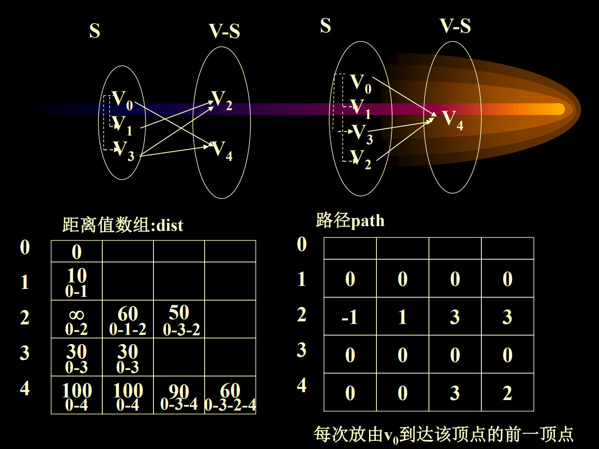
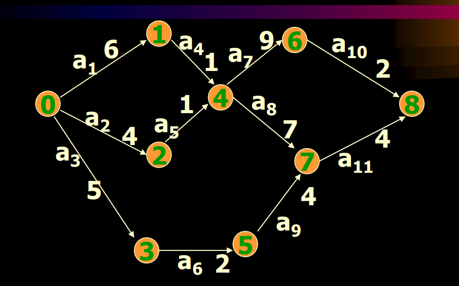
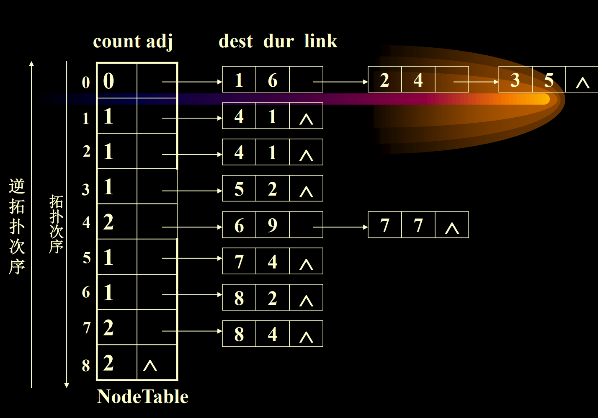

图论专题

概念与定义
图(Graph)
图是由点集$V(vertex)$和边集$E(edge)$组成的数据结构，其中可以分为无向图和有向图
完全图(Complete Graph)
对于有$n$个节点的无向图，如果它的边集大小为$\frac{n*(n-1)}{2}$，即每两个节点之间都有连边，则称其为完全图
度数(degree)
节点的度数（degree，记为$TD(v)$）就是与之相连的边的条数
特别的，对于有向图(digraph)而言，节点的入度（in-degree，记为$ID(v)$）是指向它的边的条数，出度（out-degree，记为$OD(v)$）是由它指出的边的条数，显然有$TD(v)=ID(v)+OD(v)$
子图(Subgraph)
点集是原点集子集，边集是原边集子集，且边集中的节点都在点集中的图
路径(Path)
一个满足前一个节点到后一个节点有连边的节点序列
简单路径和简单环路
简单路径中不包含重复顶点；简单环路除了首尾节点重复，其它均满足简单路径的要求
连通图和连通分量
对于无向图而言，如果任意两个节点之间都有路径可达，则将其称为连通图；非连通图的极大连通子图称为连通分量
强连通图和强连通分量
对于有向图而言，如果任意两个节点之间（既包含从a到b，也包含从b到a）均有路径可达，则将其称为强连通图；非强连通图的极大强连通子图称为强连通分量
网络
网络是指带权图或带权有向图
生成树
生成树是一张图的极小连通子图，有且仅有n个顶点和n-1条边
图的表示方法
邻接矩阵(Adjacency Matrix)
01矩阵，第i行和第j列置1表示从i到j有一条边，否则没有，无向图的邻接矩阵对称
对于带权图而言，用边权代替1，如果没有边则置为无穷大
邻接表(Linked-adjacency List)
每个节点下挂一张说明邻接节点的链表，如果带权则缓存邻接节点编号的同时缓存边权，有向图为了快速地查找哪些节点能够到达当前节点还会存储一张逆连接表
相较于邻接矩阵降低了对内存空间的需要，从$n^2$降低到了只与边的数量$m(最大取值为\frac{n*(n-1)}{2})$有关
邻接多重表(Adjacency Multi-list)
对于邻接表来说，图中的一条边会被存储两次，邻接多重表则将边视为一个节点，缓存了起点与终点的数据，其中path1表示指向起点节点下一条同类型边的指针，path2表示指向终点下一条同类型边的指针


图的遍历
深度优先遍历
$Depth~First~Search$
沿着一条路径走到底后再依次回退
广度优先遍历
$Breadth~First~Search$
经过一个节点后就将所有与它邻接且未访问过的节点加入访问队列，然后依次访问
最小生成树
$Minimum-cost~Spanning~Tree$
Kruskal算法
每次按边权从小到大的顺序取出边集中的一条边，检查其连接的两端节点是否已经连通，如果不连通则加入此边，否则继续，直到选择满n-1条边
该算法需要执行边数次数的循环，每次循环需要进行一次并查集的find操作，因此时间复杂度为$mlog_2n$
Prim算法
从任意一个节点出发，将其加入集合$U$，然后在$U$与$V-U$的顶点之间的连边中选出权值最小的边，将对应的节点加入集合$U$，如此重复，直到$U=V$
该算法的循环需要执行n次，每一次循环要从平均$\frac{n}{2}$条可能存在的边中选出最短边，因此时间复杂度为$n^2$
最短路径
Dijkstra算法
用于权值非负的带权图中单源最短路问题，其做法是先将源点选入集合中，标记距离为0，到其他节点的距离更新为与当前集合中的点有直接连边的距离；然后找出到其他点的连边中权值最小的，将对应的节点加入集合，此时更新的距离一定是从源点到该节点最短的路径，所以算法的思想是用当前的最短路径在一步之内来更新其他的路径；然后进行下一次循环，直到所有节点都被加入集合当中
以下是一次该算法的运算过程实例


表中的每一列对应于一次循环后的结果，由于这种实现过程与Prim算法几乎一致，因此时间复杂度是$n^2$
Bellman-Fort算法
Dijkstra算法无法解决边权为负的情况，因为它默认了多走一步的距离一定不少于不走这一步，即边权一定非负
贝尔曼-福特算法的思路是构造最短路径长度的数组$dist^x[v]$表示从源点$u$出发到达终点$v$最多经过$x$条边的最短路径长度，如果$x\ge3$则需要满足经过的路径中不含有负长度回路，否则会一直更新下去。于是就可以得到状态转移方程：
$dist^1[v]=edge[u][v],dist^k[v]=min(dist^{k-1}[v],min(dist^{k-1}[j]+edge[j][v])),j为中间节点,2\le k\le n-1$
即要么继承自上一步，要么多走更短距离的一步
复杂度显然也是$n^2$，仍然解决单源最短路问题
Floyed算法
能够解决所有顶点之间的最短路问题，但是所有边权都必须大于0，有两种计算方法，第一种是将每个节点作为源点，各运行一次Dijkstra算法，时间复杂度为$n^3$；第二种则是直接使用邻接矩阵进行状态转移： $dist[u][v]=min(dist[u][v],dist[u][k]+dist[k][v])$
对于每一对起点和终点，都需要遍历所有的节点作为中间节点进行状态的转移，因此时间复杂度同样为$n^3$
活动网络
$Activity~Network$
AOV网络
用顶点表示活动，用边表示活动间的优先关系的有向图称为AOV网，其中不应该出现有向环
直接前驱/后继
如果$<u,v>$是有向图中的一条边，则u是v的直接前驱，v是u的直接后继
前驱/后继
如果顶点u和v之间存在一条有向路径（从u到v），则u是v的前驱，v是u的后继
拓扑排序
拓扑序列指的是一个节点的线性序列，满足如果有向图中有一条从u到v的路径，则序列中u必定位于v之前。拓扑序列很好地表示了AOV网络中活动先后顺序的关系，但拓扑序列不是唯一的
算法过程
先找出图中入度为0的节点，然后将它加入序列，并删除图中与之相关的边，然后重复该过程。拓扑排序的时间复杂度为$n+e$
AOE网络
用有向边表示活动，而用顶点表示事件（活动的状态），入边表示活动已经完成，出边表示活动可以开始。边权可以表示活动需要的时间，因此可以通过该网络计算出所有活动需要的时间，与AOV网络不同的是AOE网络有唯一的入度为0的节点和出度为0的节点
关键路径
源点到汇点之间最长的路径，缩短它的路径即可压缩整个工程完成需要的时间
算法过程
定义$Ve[i]$（earliest）表示事件i最早发生的时间，即源点到$V_i$的最大路径长度；$Vl[i]$（latest）表示事件i允许最晚发生时间，即$V_e[n-1]-V_i到汇点的最大路径长度$；$e[i]$表示活动$<V_i,V_j>$的最早开始时间，即$Ve[i]$；$l[i]$表示活动$<V_i,V_j>$的允许最晚开始时间，即$Vl[j]-val<i,j>$；$l[i]-e[i]$表示活动的时间余量，称为松弛时间(Slack Time)，如果该值为0则表示该活动是没有时间余量的关键活动
先进行拓扑排序，从$Ve[0]=0$开始，在排序的同时计算$Ve[i]=max(Ve[j]+val<j,i>)$，其中j是所有与i之间有连边的节点，取最大值是因为必须要所有前置事件都处理完毕才能开始
然后进行逆拓扑排序，从$Vl[n-1]=Ve[n-1]$开始，在排序的同时计算$Vl[i]=min(Vl[j]-val<i,j>)$，取最小值是因为必须要保证剩下的活动也来得及处理
接下来即可计算$e[i]$和$l[i]$，如果$e[i]$与$l[i]$相等则活动i是关键活动
拓扑排序和逆拓扑排序可以使用节点表进行预处理，例如：


算法的复杂度是$n+e$